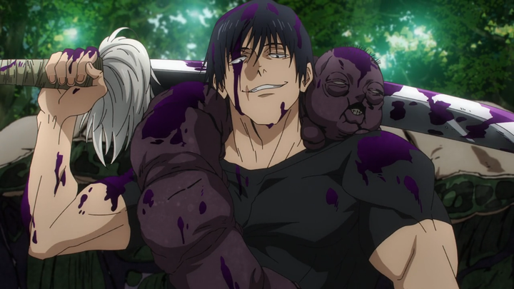

Gojo Satoru - один из главных персонажей манги и аниме "Jujutsu Kaisen". Он является сильным и загадочным персонажем, обладающим могущественными навыками джуджуцу.
Gojo Satoru выглядит как харизматичный и уверенный в себе учитель, но в тоже время скрывает многое от своих учеников и коллег по обществу джуджуцу.
Его уникальная техника джуджуцу, "Шестнадцатая техника без названия", делает его одним из самых сильных джуджутсеров во вселенной Jujutsu Kaisen.
Краткое описание...
Toji Тодзи — высокий мускулистый мужчина с прямыми черными волосами средней длины, доходящими до ушей. У него зеленые глаза, как и у его сына,